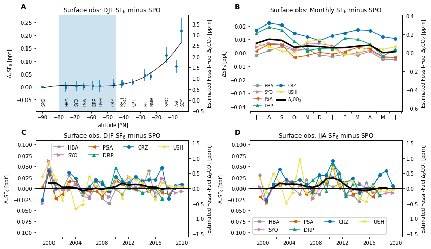

Surface observations of SF6¶
%load_ext autoreload
%autoreload 2
import numpy as np
import matplotlib.pyplot as plt
import matplotlib.gridspec as gridspec
import datasets
import figure_panels
import obs_surface
import util
Available records¶
Station information¶
stninfo = obs_surface.get_stn_info('SF6')
stninfo
| lat | lon | alt | stn | type | institution | constituent | |
|---|---|---|---|---|---|---|---|
| SPO_NOAA_flask_SF6 | -89.98 | -24.8 | 2810 | SPO | flask | NOAA | SF6 |
| HBA_NOAA_flask_SF6 | -75.605 | -26.21 | 10 | HBA | flask | NOAA | SF6 |
| SYO_NOAA_flask_SF6 | -69.0125 | 39.59 | 14 | SYO | flask | NOAA | SF6 |
| PSA_NOAA_flask_SF6 | -64.9 | -64 | 10 | PSA | flask | NOAA | SF6 |
| DRP_NOAA_flask_SF6 | -59 | -64.69 | 10 | DRP | flask | NOAA | SF6 |
| CRZ_NOAA_flask_SF6 | -46.4337 | 51.8478 | 197 | CRZ | flask | NOAA | SF6 |
| CGO_NOAA_flask_SF6 | -40.683 | 144.69 | 94 | CGO | flask | NOAA | SF6 |
| CPT_NOAA_flask_SF6 | -34.3523 | 18.4891 | 230 | CPT | flask | NOAA | SF6 |
| USH_NOAA_flask_SF6 | -54.8484 | -68.3106 | 12 | USH | flask | NOAA | SF6 |
| BHD_NOAA_flask_SF6 | -41.4083 | 174.871 | 85 | BHD | flask | NOAA | SF6 |
| EIC_NOAA_flask_SF6 | -27.16 | -109.43 | 47 | EIC | flask | NOAA | SF6 |
| NMB_NOAA_flask_SF6 | -23.58 | 15.03 | 456 | NMB | flask | NOAA | SF6 |
| SMO_NOAA_flask_SF6 | -14.2474 | -170.5644 | 42 | SMO | flask | NOAA | SF6 |
| ASC_NOAA_flask_SF6 | -7.9667 | -14.4 | 85 | ASC | flask | NOAA | SF6 |
| SEY_NOAA_flask_SF6 | -4.6824 | 55.5325 | 2 | SEY | flask | NOAA | SF6 |
Seasonal-mean distributions¶
data_a_djf = datasets.obs_surface_stn_v_lat('DJF', 'SF6', minus_spo=True)
data_a_djf
<xarray.Dataset>
Dimensions: (record: 15, time: 22)
Coordinates:
* record (record) object 'SPO_NOAA_flask_SF6' ... 'SEY_NOAA_flask_SF6'
institution (record) object 'NOAA' 'NOAA' 'NOAA' ... 'NOAA' 'NOAA' 'NOAA'
lat (record) float64 -89.98 -75.61 -69.01 ... -14.25 -7.967 -4.682
lon (record) float64 -24.8 -26.21 39.59 ... -170.6 -14.4 55.53
stncode (record) object 'SPO' 'HBA' 'SYO' 'PSA' ... 'SMO' 'ASC' 'SEY'
* time (time) int64 1999 2000 2001 2002 2003 ... 2017 2018 2019 2020
Data variables:
SF6 (time, record) float64 0.0 -0.02667 -0.03333 ... 0.1067 0.2833xarray.Dataset
- record: 15
- time: 22
- record(record)object'SPO_NOAA_flask_SF6' ... 'SEY_NO...
array(['SPO_NOAA_flask_SF6', 'HBA_NOAA_flask_SF6', 'SYO_NOAA_flask_SF6', 'PSA_NOAA_flask_SF6', 'DRP_NOAA_flask_SF6', 'USH_NOAA_flask_SF6', 'CRZ_NOAA_flask_SF6', 'BHD_NOAA_flask_SF6', 'CGO_NOAA_flask_SF6', 'CPT_NOAA_flask_SF6', 'EIC_NOAA_flask_SF6', 'NMB_NOAA_flask_SF6', 'SMO_NOAA_flask_SF6', 'ASC_NOAA_flask_SF6', 'SEY_NOAA_flask_SF6'], dtype=object) - institution(record)object'NOAA' 'NOAA' ... 'NOAA' 'NOAA'
array(['NOAA', 'NOAA', 'NOAA', 'NOAA', 'NOAA', 'NOAA', 'NOAA', 'NOAA', 'NOAA', 'NOAA', 'NOAA', 'NOAA', 'NOAA', 'NOAA', 'NOAA'], dtype=object) - lat(record)float64-89.98 -75.61 ... -7.967 -4.682
array([-89.98 , -75.605 , -69.0125, -64.9 , -59. , -54.8484, -46.4337, -41.4083, -40.683 , -34.3523, -27.16 , -23.58 , -14.2474, -7.9667, -4.6824]) - lon(record)float64-24.8 -26.21 39.59 ... -14.4 55.53
array([ -24.8 , -26.21 , 39.59 , -64. , -64.69 , -68.3106, 51.8478, 174.871 , 144.69 , 18.4891, -109.43 , 15.03 , -170.5644, -14.4 , 55.5325]) - stncode(record)object'SPO' 'HBA' 'SYO' ... 'ASC' 'SEY'
array(['SPO', 'HBA', 'SYO', 'PSA', 'DRP', 'USH', 'CRZ', 'BHD', 'CGO', 'CPT', 'EIC', 'NMB', 'SMO', 'ASC', 'SEY'], dtype=object) - time(time)int641999 2000 2001 ... 2018 2019 2020
array([1999, 2000, 2001, 2002, 2003, 2004, 2005, 2006, 2007, 2008, 2009, 2010, 2011, 2012, 2013, 2014, 2015, 2016, 2017, 2018, 2019, 2020])
- SF6(time, record)float640.0 -0.02667 ... 0.1067 0.2833
array([[ 0.00000000e+00, -2.66666667e-02, -3.33333333e-02, 3.33333333e-03, nan, 2.66666667e-02, -2.66666667e-02, nan, 1.66666667e-02, nan, 4.66666667e-02, 3.33333333e-02, 1.00000000e-01, 7.66666667e-02, 1.46666667e-01], [ 0.00000000e+00, 4.33333333e-02, 6.33333333e-02, 3.33333333e-02, nan, 6.00000000e-02, 4.00000000e-02, nan, 2.33333333e-02, nan, 1.20000000e-01, 6.33333333e-02, 1.53333333e-01, 5.66666667e-02, 1.86666667e-01], [ 0.00000000e+00, 1.00000000e-02, -3.33333333e-03, -2.33333333e-02, nan, 2.00000000e-02, -2.96204034e-16, -1.00000000e-02, -6.66666667e-03, nan, 5.00000000e-02, 2.00000000e-02, 1.03333333e-01, 6.00000000e-02, 1.60000000e-01], [ 0.00000000e+00, -3.33333333e-03, 2.96637714e-16, -1.33333333e-02, nan, -2.66666667e-02, nan, 3.33333333e-03, -6.66666667e-03, nan, 2.33333333e-02, nan, 7.33333333e-02, 4.66666667e-02, 1.46666667e-01], ... [ 0.00000000e+00, -5.00000000e-03, 2.33333333e-02, -1.00000000e-02, -2.33333333e-02, 1.33333333e-02, 4.66666667e-02, nan, 1.00000000e-02, 1.00000000e-02, 3.33333333e-02, 3.33333333e-02, 1.66666667e-01, 8.66666667e-02, 2.76666667e-01], [ 0.00000000e+00, nan, -5.92408067e-16, -1.33333333e-02, nan, 6.66666667e-03, -2.33333333e-02, 6.66666667e-03, 1.66666667e-02, 2.33333333e-02, 2.50000000e-02, 1.33333333e-02, 1.56666667e-01, 4.66666667e-02, 2.86666667e-01], [ 0.00000000e+00, nan, -1.00000000e-02, 3.33333333e-03, 3.33333333e-03, 3.33333333e-03, 6.66666667e-03, 3.33333333e-03, 2.00000000e-02, 2.00000000e-02, 7.66666667e-02, 6.00000000e-02, 1.53333333e-01, 1.06666667e-01, 2.80000000e-01], [ 0.00000000e+00, nan, -6.66666667e-03, 3.33333333e-03, nan, 3.33333333e-03, 1.00000000e-02, 3.33333333e-02, 4.00000000e-02, 2.66666667e-02, nan, 4.66666667e-02, 1.50000000e-01, 1.06666667e-01, 2.83333333e-01]])
data_a_jja = datasets.obs_surface_stn_v_lat('JJA', 'SF6', minus_spo=True)
data_a_jja
<xarray.Dataset>
Dimensions: (record: 15, time: 21)
Coordinates:
* record (record) object 'SPO_NOAA_flask_SF6' ... 'SEY_NOAA_flask_SF6'
institution (record) object 'NOAA' 'NOAA' 'NOAA' ... 'NOAA' 'NOAA' 'NOAA'
lat (record) float64 -89.98 -75.61 -69.01 ... -14.25 -7.967 -4.682
lon (record) float64 -24.8 -26.21 39.59 ... -170.6 -14.4 55.53
stncode (record) object 'SPO' 'HBA' 'SYO' 'PSA' ... 'SMO' 'ASC' 'SEY'
* time (time) int64 1999 2000 2001 2002 2003 ... 2016 2017 2018 2019
Data variables:
SF6 (time, record) float64 0.0 0.03 0.003333 ... 0.08 0.07667xarray.Dataset
- record: 15
- time: 21
- record(record)object'SPO_NOAA_flask_SF6' ... 'SEY_NO...
array(['SPO_NOAA_flask_SF6', 'HBA_NOAA_flask_SF6', 'SYO_NOAA_flask_SF6', 'PSA_NOAA_flask_SF6', 'DRP_NOAA_flask_SF6', 'USH_NOAA_flask_SF6', 'CRZ_NOAA_flask_SF6', 'BHD_NOAA_flask_SF6', 'CGO_NOAA_flask_SF6', 'CPT_NOAA_flask_SF6', 'EIC_NOAA_flask_SF6', 'NMB_NOAA_flask_SF6', 'SMO_NOAA_flask_SF6', 'ASC_NOAA_flask_SF6', 'SEY_NOAA_flask_SF6'], dtype=object) - institution(record)object'NOAA' 'NOAA' ... 'NOAA' 'NOAA'
array(['NOAA', 'NOAA', 'NOAA', 'NOAA', 'NOAA', 'NOAA', 'NOAA', 'NOAA', 'NOAA', 'NOAA', 'NOAA', 'NOAA', 'NOAA', 'NOAA', 'NOAA'], dtype=object) - lat(record)float64-89.98 -75.61 ... -7.967 -4.682
array([-89.98 , -75.605 , -69.0125, -64.9 , -59. , -54.8484, -46.4337, -41.4083, -40.683 , -34.3523, -27.16 , -23.58 , -14.2474, -7.9667, -4.6824]) - lon(record)float64-24.8 -26.21 39.59 ... -14.4 55.53
array([ -24.8 , -26.21 , 39.59 , -64. , -64.69 , -68.3106, 51.8478, 174.871 , 144.69 , 18.4891, -109.43 , 15.03 , -170.5644, -14.4 , 55.5325]) - stncode(record)object'SPO' 'HBA' 'SYO' ... 'ASC' 'SEY'
array(['SPO', 'HBA', 'SYO', 'PSA', 'DRP', 'USH', 'CRZ', 'BHD', 'CGO', 'CPT', 'EIC', 'NMB', 'SMO', 'ASC', 'SEY'], dtype=object) - time(time)int641999 2000 2001 ... 2017 2018 2019
array([1999, 2000, 2001, 2002, 2003, 2004, 2005, 2006, 2007, 2008, 2009, 2010, 2011, 2012, 2013, 2014, 2015, 2016, 2017, 2018, 2019])
- SF6(time, record)float640.0 0.03 0.003333 ... 0.08 0.07667
array([[ 0.00000000e+00, 3.00000000e-02, 3.33333333e-03, -2.00000000e-02, nan, 2.33333333e-02, nan, nan, 3.33333333e-02, nan, 7.66666667e-02, 1.26666667e-01, 9.00000000e-02, 8.66666667e-02, 6.33333333e-02], [ 0.00000000e+00, -3.00000000e-02, -3.33333333e-02, -3.00000000e-02, nan, -1.00000000e-02, -2.66666667e-02, -1.66666667e-02, 1.66666667e-02, nan, -1.33333333e-02, nan, 2.00000000e-02, 5.66666667e-02, 1.66666667e-02], [ 0.00000000e+00, 3.33333333e-03, 1.00000000e-02, 1.00000000e-02, nan, 3.33333333e-02, 1.00000000e-02, 3.33333333e-02, 1.33333333e-02, nan, 4.00000000e-02, nan, 5.66666667e-02, nan, 4.00000000e-02], [ 0.00000000e+00, 6.66666667e-03, 1.33333333e-02, 1.00000000e-02, nan, 1.33333333e-02, 4.33333333e-02, 4.66666667e-02, 1.00000000e-02, nan, 3.00000000e-02, nan, 5.00000000e-02, 6.33333333e-02, 4.66666667e-02], ... [ 0.00000000e+00, -1.00000000e-02, 3.33333333e-03, -2.00000000e-02, 1.00000000e-02, 6.66666667e-03, 3.33333333e-03, 1.00000000e-02, 1.66666667e-02, 3.66666667e-02, 2.33333333e-02, 5.33333333e-02, 1.00000000e-01, 1.03333333e-01, 6.66666667e-02], [ 0.00000000e+00, nan, -1.66666667e-02, 0.00000000e+00, -1.50000000e-02, -6.66666667e-03, 3.00000000e-02, 2.00000000e-02, 2.00000000e-02, 1.33333333e-02, nan, 7.66666667e-02, 8.00000000e-02, 1.13333333e-01, 1.03333333e-01], [ 0.00000000e+00, nan, -1.00000000e-02, -5.92408067e-16, nan, -6.66666667e-03, 4.00000000e-02, 6.66666667e-03, 1.33333333e-02, -3.66666667e-02, 5.00000000e-02, 4.00000000e-02, 6.33333333e-02, 6.33333333e-02, 5.00000000e-02], [ 0.00000000e+00, nan, -1.00000000e-02, 0.00000000e+00, nan, -3.33333333e-03, 6.66666667e-03, -6.66666667e-03, 1.00000000e-02, 1.66666667e-02, 3.66666667e-02, 7.33333333e-02, 7.33333333e-02, 8.00000000e-02, 7.66666667e-02]])
Monthly climatological dataset¶
data_a_clm = datasets.obs_surface_climatology('SF6', minus_spo=True)
data_a_clm
<xarray.Dataset>
Dimensions: (stncode: 6, month: 12)
Coordinates:
* month (month) int64 1 2 3 4 5 6 7 8 9 10 11 12
* stncode (stncode) object 'HBA' 'SYO' 'PSA' 'DRP' 'CRZ' 'USH'
Data variables:
lat (stncode, month) float64 -75.61 -75.61 -75.61 ... -54.85 -54.85
SF6 (stncode, month) float64 -0.002632 -0.001111 ... 0.008095 0.009545
SF6_std (month) float64 0.01673 0.01433 0.0143 ... 0.01511 0.01689 0.01975xarray.Dataset
- stncode: 6
- month: 12
- month(month)int641 2 3 4 5 6 7 8 9 10 11 12
array([ 1, 2, 3, 4, 5, 6, 7, 8, 9, 10, 11, 12])
- stncode(stncode)object'HBA' 'SYO' 'PSA' 'DRP' 'CRZ' 'USH'
array(['HBA', 'SYO', 'PSA', 'DRP', 'CRZ', 'USH'], dtype=object)
- lat(stncode, month)float64-75.61 -75.61 ... -54.85 -54.85
array([[-75.605 , -75.605 , -75.605 , -75.605 , -75.605 , -75.605 , -75.605 , -75.605 , -75.605 , -75.605 , -75.605 , -75.605 ], [-69.0125, -69.0125, -69.0125, -69.0125, -69.0125, -69.0125, -69.0125, -69.0125, -69.0125, -69.0125, -69.0125, -69.0125], [-64.9 , -64.9 , -64.9 , -64.9 , -64.9 , -64.9 , -64.9 , -64.9 , -64.9 , -64.9 , -64.9 , -64.9 ], [-59. , -59. , -59. , -59. , -59. , -59. , -59. , -59. , -59. , -59. , -59. , -59. ], [-46.4337, -46.4337, -46.4337, -46.4337, -46.4337, -46.4337, -46.4337, -46.4337, -46.4337, -46.4337, -46.4337, -46.4337], [-54.8484, -54.8484, -54.8484, -54.8484, -54.8484, -54.8484, -54.8484, -54.8484, -54.8484, -54.8484, -54.8484, -54.8484]]) - SF6(stncode, month)float64-0.002632 -0.001111 ... 0.009545
array([[-2.63157895e-03, -1.11111111e-03, -1.66666667e-03, 1.11111111e-03, -5.00000000e-03, -5.00000000e-03, -1.66666667e-03, 1.66666667e-03, 4.44444444e-03, 1.66666667e-03, 2.77777778e-03, -1.66666667e-03], [ 5.00000000e-03, -1.36363636e-03, -8.45884209e-17, 1.90476190e-03, -3.33333333e-03, -3.33333333e-03, 4.28571429e-03, 7.14285714e-03, 6.19047619e-03, 2.38095238e-03, 7.14285714e-03, 6.81818182e-03], [-9.09090909e-04, 9.09090909e-04, 3.80952381e-03, 2.85714286e-03, -2.85714286e-03, -3.33333333e-03, 1.42857143e-03, 6.19047619e-03, 5.71428571e-03, -3.33333333e-03, -1.90476190e-03, 4.54545455e-04], [ 3.33333333e-03, 1.07692308e-02, 1.00000000e-02, 6.42857143e-03, -2.30769231e-03, 2.50000000e-03, 1.45454545e-02, 1.90000000e-02, 1.70000000e-02, 8.33333333e-03, 1.53846154e-03, 3.07692308e-03], [ 1.28571429e-02, 1.47619048e-02, 1.71428571e-02, 1.66666667e-02, 1.19047619e-02, 1.05000000e-02, 1.70000000e-02, 2.20000000e-02, 2.05000000e-02, 1.45000000e-02, 1.21052632e-02, 8.94736842e-03], [ 3.63636364e-03, -1.42857143e-03, -5.00000000e-04, 4.50000000e-03, 2.50000000e-03, 4.28571429e-03, 6.66666667e-03, 4.28571429e-03, 1.42857143e-03, 4.76190476e-04, 8.09523810e-03, 9.54545455e-03]]) - SF6_std(month)float640.01673 0.01433 ... 0.01689 0.01975
array([0.01673077, 0.01433199, 0.01430271, 0.01336184, 0.01422215, 0.01556701, 0.01562858, 0.01303319, 0.012928 , 0.01510929, 0.01688585, 0.01975468])
Visualization¶
fig = plt.figure(figsize=(10, 8))
gs = gridspec.GridSpec(
nrows=2, ncols=2,
left=0, right=1,
wspace=0.4, hspace=0.3,
)
axs = []
ax = fig.add_subplot(gs[0, 0])
axs.append(ax)
figure_panels.stn_v_lat(data_a_djf.SF6, ax, 'SF6')
ax.set_title('Surface obs: DJF SF$_6$ minus SPO')
ax = fig.add_subplot(gs[0, 1])
axs.append(ax)
figure_panels.obs_srf_seasonal(ax, data_a_clm, 'SF6')
ax.set_title('Surface obs: Monthly SF$_6$ minus SPO')
axt = fig.add_subplot(gs[1, 0])
axb = fig.add_subplot(gs[1, 1])
axs.append(axt); axs.append(axb)
figure_panels.obs_srf_trends_djf_jja(
[axt, axb],
data_a_djf.SF6.groupby('stncode').mean('record').sel(stncode=obs_surface.southern_ocean_stn_list_sf6),
data_a_jja.SF6.groupby('stncode').mean('record').sel(stncode=obs_surface.southern_ocean_stn_list_sf6),
constituent='SF6',
)
axt.set_title('Surface obs: DJF SF$_6$ minus SPO')
axb.set_title('Surface obs: JJA SF$_6$ minus SPO')
util.label_plots(fig, axs)
util.savefig('SF6')
